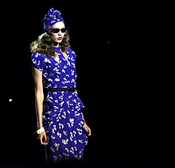

¿Que es la Moda Retro?
Los términos "moda retro" y "moda vintage" se usan algunas veces de forma intercambiable y por lo tanto pueden provocar confusión en cuanto a lo que realmente significan. El término "moda retro" (también conocido como "inspiración vintage") refiere a ropa, zapatos y accesorios que se diseñaron para recordar a ropa, zapatos y accesorios con al menos 13 años de antigüedad.
"Moda vintage" (o "ropa vintage") refiere a la original (antigua) ropa en que se basan los nuevos diseños. En términos sencillos: nueva vestimenta que parece antigua se le llama "retro", y vestimenta que parece antigua porque es antigua se le llama "vintage".
Un ejemplo de moda retro es la de deportes de las décadas de los 70 y 80; chaquetas de fútbol, jerséis, y camisetas con logotipos de equipos de fútbol son muy populares; sus diseños recuerdan comúnmente los viejos días usando líneas en los laterales y combinaciones de colores característicos de esos tiempos. Un caso específico es copa mundial de la FIFA 1970 en México. Su logotipo y fuente de letras se usaron en una variedad de ropa deportiva. Marcas como Adidas, Puma y Nike tienen sus propias divisiones especializadas en productos retro. Algunos clubes de fútbol, baloncesto y béisbol también reeditan sus primeras ropas deportivas para incrementar sus ventas.

Al principio de 2010, apareció un renacer de los colores pastel y neón, asociados estereotípicamente con la moda de los años 80 y 90 (siendo el pastel de los años 80 un renacer en sí mismo de la tendencia de los años 50). También al principio de 2010, el pantalón vaquero de cintura alta para mamás volvió de la mano de las hipster femeninas.
Hoy en día, la moda de los 90 ha regresado, con muchas de las telas y patrones ubicuas de la década (como el terciopelo cruzado y floral) ahora son populares en la década de 2010. Dr. Martens, una marca popular en los 90 también tiene un fuerte regreso al principio de la década de 2010. 2011–12 fue la mejor temporada de ventas de toda la historia de la compañía británica.
Vestimenta de la Época
Algunos de los elementos más icónicos de la moda retro de los 80 en español incluyen:
Camisa de la Época
Las camisas de manga larga eran una prenda básica de la moda de los 80. Se usaban para agregar formalidad y estilo. Los colores más populares eran el blanco, el negro y el azul claro. Las camisas de manga larga de la época eran una forma divertida y expresiva de vestirse. Eran una prenda que se podía usar para crear un look formal o para agregar un toque de personalidad. Las camisas de manga larga de los 80 son una tendencia retro que está volviendo a ser popular. Si estás buscando una prenda que sea a la vez formal y expresiva, las camisas de manga larga de los 80 son una excelente opción.
Pantalón de pata de elefante
Los pantalones de pata de elefante eran una prenda muy popular en los años 80. Tenían una silueta acampanada que se ensanchaba desde la rodilla hasta el tobillo. Los colores más populares eran el blanco, el negro y el marrón. Los pantalones de pata de elefante eran a menudo de colores brillantes, como el rosa, el azul y el verde. También se usaban con estampados llamativos, como los geométricos, florales y animal print. Los pantalones de pata de elefante eran una forma divertida y expresiva de vestirse. Eran una prenda que se podía usar para crear un look llamativo o para agregar un toque de personalidad.
Zapatos de tacon alto
Los zapatos de tacón alto eran una prenda básica de la moda de los 80, tanto para mujeres como para hombres. Se usaban para agregar altura y elegancia. Los colores más populares eran el negro, el blanco y el nude. Los zapatos de tacón alto de los 80 son una tendencia retro que está volviendo a ser popular. Los zapatos de tacón alto de plataforma también eran populares en los años 80. Estos zapatos eran cómodos de usar y proporcionaban un poco de altura extra. Los zapatos de tacón alto de plataforma eran populares entre las mujeres de todas las edades, desde adolescentes hasta mujeres profesionales.
Referentes
La moda retro de los años 80 es un estilo que se caracteriza por su colorido, exuberancia y mezcla de tendencias. Se inspira en la moda de la década de 1980, una época marcada por el auge de la música pop, la cultura de masas y la tecnología.
Los principales referentes de la moda retro de los años 80 son:
Legado

La moda retro celebra la expresión personal y la libertad de experimentar con diferentes estilos. Esto ha llevado a un aumento de la diversidad en la moda actual, con personas de todas las edades y orígenes expresando su individualidad a través de la ropa.
La moda retro es a menudo una forma de evocar recuerdos y emociones positivas. Esto ha llevado a un aumento de la popularidad de la moda vintage y de los artículos de segunda mano.
La moda retro ha ayudado a promover la diversidad en la moda actual. Los diseñadores y las marcas están cada vez más interesados en representar a personas de todas las edades, orígenes y cuerpos.
La moda vintage ha ganado popularidad en los últimos años, ya que las personas buscan formas de expresarse de forma única y sostenible. Los artículos de segunda mano y vintage ofrecen una amplia gama de estilos y precios, lo que los hace accesibles para todos.